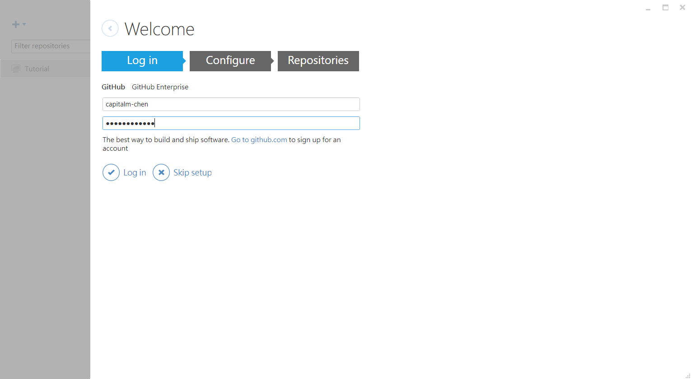
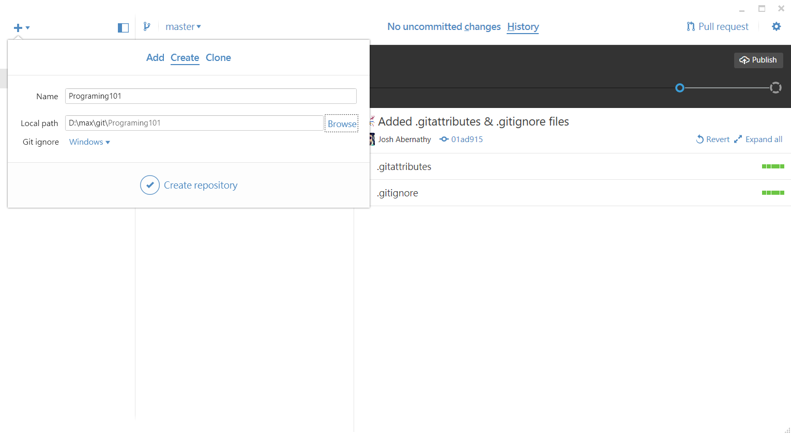
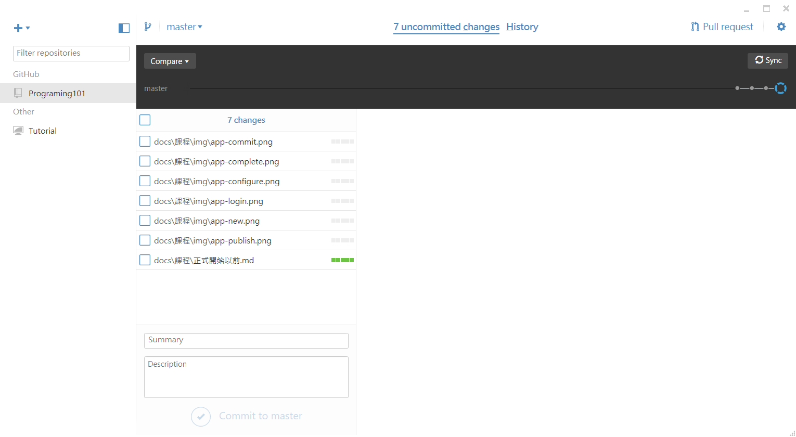

程式設計 101
Home
課程
正式開始以前
學習程式
使用 git
為什麼要版本控制?
GitHub 基本使用
程式設計 101
Docs
»
課程 »
正式開始以前
Edit on GitHub
學習程式
語法
函式庫
風格與習慣
使用 git
為什麼要版本控制?
追蹤修訂
錯誤排除
分工
責任分層
GitHub 基本使用
申請
GitHub
帳號
下載安裝
GitHub App
登入 GitHub 
設定資訊
建立專案 
發布專案
編輯專案
提交更改
同步專案 
GitHub
« Previous